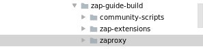
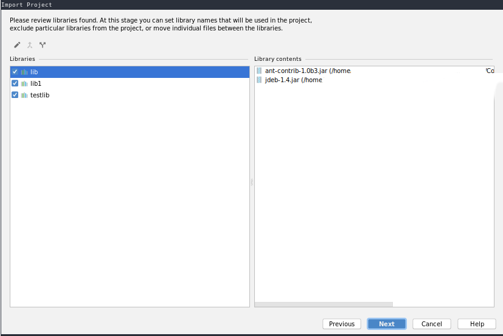
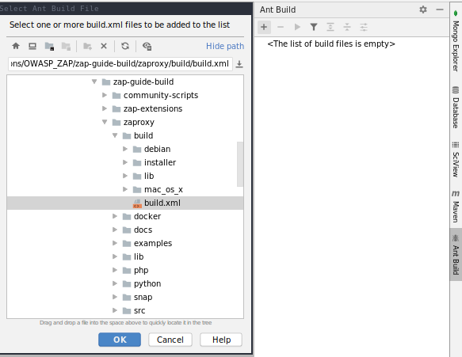
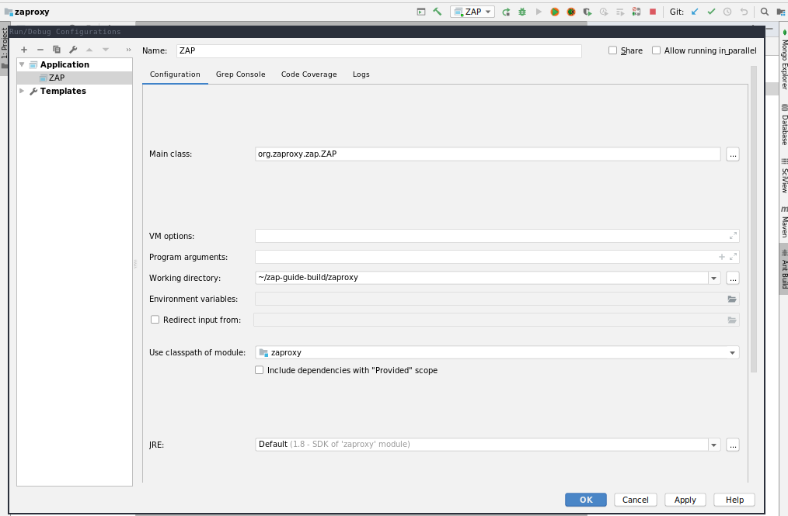
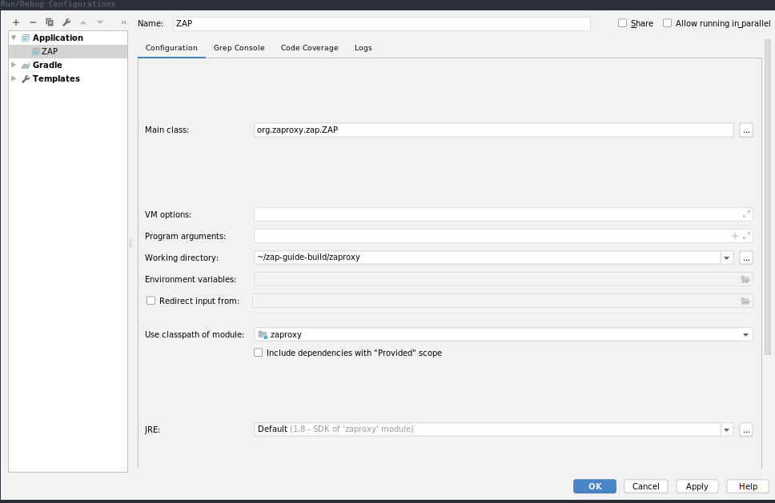

WebSocket Passive Scan using scripts with ZAP
Table of Contents
Introduction
In this blog post we are going to demonstrate a brand new feature of OWASP Zed Attack Proxy (ZAP). Specifically, we are going to use the WebSocket add-on in order to perform Passive Scanning of WebSocket messages. Even if you are not familiar with ZAP, this guide will try to be extensive enough to cover the basics behind ZAP, and give you the ability to write and use WebSocket passive scan rules. On the other hand, if you are already familiar with ZAP, you can skip the introduction section and continue with the WebSocket Passive Scan Scripts section.
At its core, ZAP is what is known as "man-in-the-middle proxy". It stands between the tester's browser and web application so that it can intercept and inspect messages sent between browser and the web application.
WebSocket Add-on
By default the WebSocket Add-on is installed and it is responsible to intercept and inspect WebSocket messages and connections. Other functions like setting breakpoints, modify the content if needed, and then forward those messages to the destination are also available, however, it is out of the scope for this blog post. The WebSocket messages are displayed in a separate tab at the bottom of the window.
Figure 2: WebSocket Panel
WebSocket Passive Scanning
The passive scans rules are used to warn the user of potential vulnerability that can be detected passively - they are not meant to send any new WebSocket message or manipulate the messages in any way. They typically run against all of the WebSocket messages that flow through ZAP. Passive rules run in a separate background thread so that they have as little effect on performance as possible.
From ZAP blog, (modified in order to fit the WebSocket Passive scan case)
At the end, what we want from the WebSocket Passive scan is to check all WebSocket message payloads for information which might reveal the existence of an issue/vulnerability (e.x. an internal server error).
Hands on Section: Open ZAP and configure your browser (Getting Started (wiki)). Open http://websocket.org/echo.html in your configured browser, connect to the WebSocket Server and send some messages.
Let's assume now that somehow (we will see that in a following section) ZAP found an issue in your WebSocket traffic, how you can be informed? By Alerts.
Alerts
An alert is a potential vulnerability and is associated with a specific WebSocket Message. A message can have more than one alert.
from ZAP wiki, (modified in order to fit the WebSocket Passive scan case)
Figure 3: Alerts Panel
An Alert is raised by a scanner (we are going to see how in a while) which gives it some properties. In the WebSocket Passive scan the properties which are essential and displayed in the Alert panel are the following:
- Name (title): The name of the alert
- URL: The URL of the HTTP message which establishes the WebSocket Connection (handshake)
- Risk: informs how crucial the alert is
- Confidence: how sure that the issue occurs
- Parameter: Not needed for now
- Attack: Used only in active scanning
- Evidence: The evidence of the issue
- CWE ID: Common Weakness Enumeration (wikipedia)
- WASC ID: Threat Classification Reference
- Source:
Passiveas it performs passive scan and the id of the scanner - Description: A brief description of the alert
- Other info: The WebSocket Message payload
- Solution: Some possible solutions
- Reference: External reference (eg links) for further reading
Hands on Section: Let's trigger some Alerts. Firstly, you have been already connected to the WebSocket which is in the http://websocket.org/echo.html.
Case 1: Write an email address (like mail@zaproxy.com) and send it. See what alert was raised.
Case 2: Encode "Hello World" with Base64 (SGVsbG8gV29ybGQ=) and send it. See what alert was raised.
Case 3: Type some valid XML with the following comment in it : <!– TODO: fix this issue –>. See what alert was raised.
<layer1>
<!--This is a comment -->
<layer2>
<!-- TODO: fix this issue -->
<form> ........ </form>
</layer2>
</layer1>
Case 4: Add a user in the 'Context'(wiki). Encode the Username with MD5 hash and send it. See what alert was raised.
Finally: Go to Alerts Panel hit the broom icon to remove all Alerts.
Script Console Add-on
And now one of my favorite features of ZAP, the Script Console add-on.
The Script Console add-on allows you to run scripts that can be embedded within ZAP and can access internal ZAP data structures. It supports any scripting language that supports JSR 223 (http://www.jcp.org/en/jsr/detail?id=223) , including:
ECMAScript / Javascript (using Nashorn engine, included by default)
Zest https://developer.mozilla.org/en-US/docs/zest (included by default)
Groovy http://groovy-lang.org/
Python http://www.jython.org
Ruby - http://jruby.org/
and many more…
From ZAP's wiki
Referring on scripts console add-on we are referring to the ability that the
user has to write scripts which implement various behaviors like scans, fuzzing etc.
Scripts Console add-on has a panel where the scripts are displayed. The panel
has a tree structure, which has two branches, the Scripts branch and
Templates. In both branches there are some folders which are referring on
different kinds of scripts. As you can see those folders in both branches have
the same names.
Figure 4: Scripts Tree Sidebar
ZAP defines Templates in order to be used as base scripts. As we will see
in a while every kind of scripts should perform a specific operation. For
instance, a WebSocket Passive Scanning script defines a set of rules that
WebSocket messages should adhere to. In addition, Templates are not
runnable, enablable or directly editable, they are used only as templates. In
order to use a template, right click on it and then hit New script....
Hands on Section:
Go to the template script Base64 Disclosure.js, right click on it, and hit
New Script... rename Script Name to MyBase64 Disclosure.js and hit
save. See what happened.
Scripts, on the other hand, are the actual scripts which are run by ZAP.
There are a good many possibilities in which we can use scripts,
however, in this guide we are interested in WebSocket Passive Scanning.
Passive Scripts have two states, enabled and disabled. When a script is
disabled that means that it is not running at all. Other options like
duplicate script or remove script are available by right clicking on
them. You should always remember that Right Click in ZAP is your best
friend. If a script failed (e.x. syntax error), exceptions messages will be
displayed in Scripts Console and the script will be automatically disabled.
By default, the folders under Scripts are empty, except from the WebSocket
Passive Rules. If you want to explore more the scripting techniques and add
some rules in ZAP, I totally recommend to install Community Scripts from
marketplace.
Hands on Section: Go to the script that was created before. If it is not disabled, then disable it using right click. Navigate over the code and find the following line:
PRINT_RESULTS = false;
make it true, enable and save the script.
Passive scan scripts are running against all messages, as a result we do not have to run them explicitly. So the only thing we have to do is to enable them, and when some messages will be transmitted via the WebSocket connections the scripts will be triggered.
Hands on Section: Connect to http://websocket.org/echo.html websocket server as before, encode "Hello World" with a Base64 encoder (SGVsbG8gV29ybGQ=) and send it. See what was printed in the scripts console.
Then Disable your script, and find the following lines:
helper.newAlert()
.setRiskConfidence(RISK_INFO, CONFIDENCE_MEDIUM)
.setName("Base64 Disclosure in WebSocket message (script)")
.setDescription("A Base64-encoded string has been found in the websocket incoming message. Base64-encoded data may contain sensitive " +
"information such as usernames, passwords or cookies which should be further inspected. Decoded evidence: "
+ decodedEvidence + ".")
.setSolution("Base64-encoding should not be used to store or send sensitive information.")
.setEvidence(evidence)
.raise();
and change the name of the alert. Re-enable the script. Send the Encoded
"Hello World" once again and then go to the Alert Panel and see what happened.
Finally, remove the script using right click.
Figure 5: Alert which is raised by MyBase64 script
WebSocket Passive Scan Scripts
By default ZAP comes with various WebSocket Passive Scan Scripts. Default
Scripts are scanning passively the WebSocket Messages in order to disclosure
information which might be useful for the user while testing a Web
Application. As we saw before, scripts are classified into two categories,
Templates and Scripts. Default scripts are located in both categories.
Those which are in Scripts category are ones which actually run against
the WebSocket Messages. You can modify them any
time you want or even remove them. By default those passive scan scripts are
enabled and they are located under <ZAP Home>/scripts/scripts/websocketpassive
directory. If you are not satisfied with your changes, you can always revert
to initial default scripts from the templates.
Template scripts can be found useful in two cases. In first case, you can use
them as base scripts, meaning that you can develop your rule by stacking your
features over the existing ones. In the other case, you can use them as back up
scripts, for instance if you are not satisfied with your changes, you can
revert them using the template script. They are located under <ZAP
Home>/scripts/templates/websocketpassive
directory in OS. Template scripts classified to those which are implement a
passive scan rule and those which are just templates, meaning that they are not
implement any passive scan rule. If you are interested in writing a passive scan
rule which is not related with the existing ones, use those empty templates. To
identify them they are using keyword Template.
Full list of default WebSocket Passive scan scripts and explanation about them
can be found in ZAP help (F1 -> Add Ons -> WebSockets -> Passive Scan
Rules).
Default Scripts
- Base64 Disclosure: This script analyzes incoming WebSocket message payload for Base64 strings. The encoded information may include sensitive data which may not specifically meant for end user consumption. The regular expression which is used to identify the Base64 string is based on padding characters. As result False Negative may occur if the encoded string has length N bits where (N)mod6 = 0. On the other hand, False Positives may occur if the input text contains strings ending with '='.
- Information Disclosure: Application Errors: This script analyzes incoming WebSocket message payload for Base64 strings. The encoded information may include sensitive data which may not specifically meant for end user consumption. The regular expression which is used to identify the Base64 string is based on padding characters. As result False Negative may occur if the encoded string has length N bits where (N)mod6 = 0. On the other hand, False Positives may occur if the input text contains strings ending with '='.
- Information Disclosure: Credit Card Number: This script scans for the presence of Personally Information Identifiable in incoming WebSocket message paylaod. More specifically, it passively scans payload for credit card numbers. The available scans are for the following credit card types: {American Express, Diners Club, Discover, Jcb, Mestro, Master Card, Visa}.
- Information Disclosure: Debug Errors: This script checks the incoming WebSocket message payload for known Debug Error message fragments. Access to such details may provide a malicious individual with means by which to further abuse the web site. They may also leak data not specifically meant for end user consumption.
- Information Disclosure: Email address: This script scans incoming WebSocket messages for email addresses. Email addresses may be not specifically meant for end user consumption.
- Information Disclosure: Suspicious XML Comments: This script checks incoming WebSocket messages payloads, which are XML formatted, for suspicious comments. The comments it is searching for are relevant to components with which an attacker can extract useful information. Comments like FIXME, BUG, etc might be helpful for further attacks targeting the weaknesses of the web application.
- Private Address Disclosure: Checks incoming WebSocket message payload for inclusion of RFC 1918 IPv4 addresses as well as Amazon EC2 private hostnames (for example, ip-10-0-56-78). This information can give an attacker useful information about the IP address scheme of the internal network, and might be helpful for further attacks targeting internal systems. This passive scanner may generate false positives in the case of larger dotted numeric strings, such as vp09.02.51.10.01.09.16, where the latter 4 octets appear to be a RFC 1918 IPv4 address. After review an analyst can mark such alerts as False Positives in ZAP.
-
Username Disclosure:
Checks incoming WebSocket message payload for usernames. This script can find
usernames which are hashed with the following methods: {MD2, MD5, SHA256,
SHA384, SHA512}. The usernames have to be defined in any context before. In
order to a add user in a Context follow the steps below:
- Include the handshake request in `Context`
- Set the target user in `Session Context`
Change the Default Scripts
What's great about scripts is the fact that's extremely easy to configure them according to your own needs. All WebSocket Passive scans are implemented with scripts. Additionally, you can easily reproduce an issue only by sharing and loading the same script.
Use case 1: Application Error Scanner
(Based on Application Error Scanner script)
Use case: You need to examine a Web Application about errors which might be transmitted over the WebSocket Connection. Let's say that the Default Script supports only MySQL Errors (this is not true) and you want to add rules for Microsoft DB as well.
Let's assume that the default script is the following one:
OPCODE_TEXT = 0x1;
RISK_MEDIUM = 2;
CONFIDENCE_MEDIUM = 2;
var dbErrors = [/supplied argument is not a valid MySQL result/igm,
/Invalid parameter type/igm,
/You have an error in your SQL syntax/igm,
/server object error/igm
......................
.....................
];
function scan(helper,msg) {
if(msg.opcode != OPCODE_TEXT || msg.isOutgoing){
return;
}
var message = String(msg.getReadablePayload());
var matches;
dbErrors.forEach(function(pattern){
if((matches = message.match(pattern)) != null){
matches.forEach(function(evidence){
raiseAlert(helper, evidence);
});
}
});
}
function raiseAlert(helper, evidence){
helper.newAlert()
.setRiskConfidence(RISK_MEDIUM, CONFIDENCE_MEDIUM)
.setName("Application Error Disclosure via WebSockets (script)")
.setDescription("This payload contains an error/warning message that\
may disclose sensitive information like the location of the file\
that produced the unhandled exception. This information can be used\
to launch further attacks against the web application.")
.setSolution("Review the error payloads which are piped directly to WebSockets.\
Handle the related exceptions.\
Consider implementing a mechanism to provide a unique\
error reference/identifier to the client (browser) while logging the\
details on the server side and not exposing them to the user.")
.setEvidence(evidence)
.setCweId(209) // Information Exposure Through an Error Message
.setWascId(13) // Information Leakage
.raise();
}
function getName(){
return "Application Error Disclosure script";
}
function getId(){
return 110001;
}
How easily can you extend this script? Just by adding a few lines:
var microsoftDbErrors = [/Microsoft OLE DB Provider for ODBC Drivers/igm,
/Microsoft OLE DB Provider for SQL Server/igm,
/ODBC Microsoft Access Driver/igm,
/ODBC SQL Server Driver/igm];
var mySqlDbErrors = [/supplied argument is not a valid MySQL result/igm,
/Invalid parameter type/igm,
/You have an error in your SQL syntax/igm,
/server object error/igm
......................
.....................
];
var dbErrors = microsoftDbErrors.concat(mySqlDbErrors);
This is just a demonstration how easily you can modify some of the scripts. The actual script contains more Error messages for more cases.
Write your own scripts
What's awesome in ZAP is the ability easily write your own rules. In this section we are going to write 4 different rules, from a dummy one to more "sophisticated" ones. In this guide I am using JavaScript but the same procedure would be possible using Jython with only slightly difference in syntax.
Actually, scripts implement an interface which is used internally by ZAP. WebSocket Passive Scanning uses the WebSocketPassiveScript interface.
public interface WebSocketPassiveScript {
void scan(WebSocketScanHelper helper, WebSocketMessageDTO msg) throws ScriptException;
default int getId() { return ScriptsWebSocketPassiveScanner.PLUGIN_ID; }
default String getName() { return ScriptsWebSocketPassiveScanner.PLUGIN_NAME; }
}
In your script you have to implement scan(helper,msg) and optionally
getId() and getName(). Those methods are called every time a WebSocket
Message is transmitted over the WebSocket protocol, either is outgoing
(client -> server) or incoming (server -> client).
-
scan(helper,msg): Here is where you should implement your scanning rule by examining themsgand raising alerts usinghelper-
msg: Is WebSocketMessageDTO instance which represent a WebSocket Message. You should examine those instances using their functions which is presented in a Template (presented in a while as well). -
helperthe WebSockeScanHelper interface provides thenewAlert()method in order to raise the appropriate alerts.-
helper.newAlert()-> Returns an WebSocketAlertRaiser instance which is used for building and raising alerts. You can find some useful functions and explanation about them in the Template script.
-
-
-
(Optional)
getId(): The ID of the passive rule, it is used on Alerts. Scanning rules are documented in scanners.md with their ID. -
(Optional)
getName()The name of the passive rule.
Case 0: Greater Than 10
Use case: Let's assume that you are interested in writing a rule in order to be informed when an outgoing WebSocket message payload, with text opcode, has length greater that 10.
First of all, we have to create a new script using the Template. In this guide we are going to use only JavaScript rules, however, the procedure is the same for other available scripting languages as well.
Hands on Section: Create a new template from Passive WebSocket Scan
Template.js, name it GreaterThan10.js and hit save.
Let's take a look at the template script. The first few lines are constants which might be useful in your scripts.
OPCODE_CONTINUATION = 0x0;
OPCODE_TEXT = 0x1;
OPCODE_BINARY = 0x2;
OPCODE_CLOSE = 0x8;
OPCODE_PING = 0x9;
OPCODE_PONG = 0xA;
RISK_INFO = 0;
RISK_LOW = 1;
RISK_MEDIUM = 2;
RISK_HIGH = 3;
CONFIDENCE_LOW = 1;
CONFIDENCE_MEDIUM = 2;
CONFIDENCE_HIGH = 3;
Hands on Section: Keep only the constants which are useful for our case (e.g.
OPCODE_TEXT, RISK_INFO, CONFIDENCE_HIGH).
Template script also contains help content with functions and variables which might be useful to you.
/**
* This function scans passively WebSocket messages. The scan function will be called for
* messages via ZAP.
*
* @param helper - the WebSocketPassiveHelper interface provides the newAlert() method in order
* to raise the appropriate alerts
*
* Some useful function(s) about WebSocketPassiveHelper:
* helper.newAlert() -> Returns an WebSocketAlertRaiser instance which is used
* for building and raising alerts.
* * Some useful functions about WebSocketAlertRaiser:
* * alertRaiser.setRiskConfidence(risk, confidence) -> Sets the Risk and the Confidence of the alert. (by default RISK_INFO, CONFIDENCE_MEDIUM).
* * alertRaiser.setName(name) -> Sets the name (by default "").
* * alertRaiser.setDescription(description) -> Sets a description about potential threat (by default "").
* * alertRaiser.setParam(param) -> Sets in which parameter threat is noticed (by default "").
* * alertRaiser.setSolution(solution) -> Sets a possible solution (by default "").
* * alertRaiser.setReference(reference) -> Sets extra references (ex. a web link) (by default "").
* * alertRaiser.setEvidence(evidence) -> Sets what's the evidence of potential thread (by default "").
* * alertRaiser.setCweId(cweId) -> Sets the CWE ID of the issue (by default 0)
* * alertRaiser.setWascId(wascId) -> Sets the WASC ID of the issue (by default 0)
* * alertRaiser.raise() -> Build and Raise the alert (returns the WebSocketAlertWrapper)
* @param msg - the Websocket Message being scanned. This is a WebSocketMessageDTO object.
*
* Some useful functions and fields of WebSocketMessageDTO:
* msg.channel -> Channel of the message (WebSocketChannelDTO)
* msg.id -> Unique ID of the message (int)
* msg.opcode -> Opcode of the message (int) (Opcodes defined bellow)
* msg.readableOpcode -> Textual representation of opcode (String)
* msg.isOutgoing -> Outgoing or incoming message (boolean)
* msg.getReadablePayload() -> Return readable representation of payload
*
* * Some useful functions and fields of WebSocketChannelDTO:
* * channel.id -> Unique ID of the message (int)
* * channel.host -> Host of the WebSocket Server (String)
* * channel.port -> Port where the channel is connected at. Usually at 80 or 443.
* * channel.url -> URL used in HTTP handshake (String).
*/
function scan(helper,msg) {
// ............
}
It's quite common in passive scan rules to check first if the message has the properties we want.
Hands on Section: Remove the default code in scan(helper, msg), then
check if the message has those properties (be outgoing and has text
opcode) and keep them for examination else return without doing anything.
When it is required to examine the payload we have to extract the payload of the WebSocket message.
Hands on Section: Get the payload and check if it has more than 10 characters.
If the payload has payload.length > 10 then we have to
raise an alert in order to inform ourselves that a message payload violate
our rule. Raise an alert by using helper.newAlert() and build the alert
accordingly.
Hands on Section: Raise an alert with a Name, Risk & Confidence, evidence and description. Save and Enable the script
OPCODE_TEXT = 0x1;
RISK_INFO = 0;
CONFIDENCE_HIGH = 3;
function scan(helper,msg) {
if(msg.opcode != OPCODE_TEXT || !msg.isOutgoing){
return;
}
var payload = String(msg.getReadablePayload());
if(payload.length > 10){
helper.newAlert()
.setRiskConfidence(RISK_INFO, CONFIDENCE_HIGH)
.setName("Greater Than 10 (Script)")
.setDescription("The payload has more than 10 characters")
.setEvidence(payload)
.raise();
}
}
Case 1: Email Disclosure
(Based on Email Disclosure Script)
We are using this case because it's common to have Regular Expression patterns in rules. In this rule we want a pattern in order to identify email addresses in WebSocket messages payloads. This script is straightforward as it uses just a regular expression to match the pattern with the incoming message payload.
When we are using patterns the best way is to set the evidence, of the alert,
to the matching characters in order to be informed about the potential
issue. In this script we set also Name and ID to the rule.
// This script scans incoming WebSocket messages for email address.
// * Author: Manos Kirtas (Manos Kirtas)
// * Based on: community-scripts/passive/Find Emails.js
OPCODE_TEXT = 0x1;
RISK_INFO = 0;
CONFIDENCE_HIGH = 3;
var emailRegex = new RegExp("([a-z0-9_.+-]+@[a-z0-9]+[a-z0-9-]*\.[a-z0-9-.]*[a-z0-9]{2,})", 'gmi');
function scan(helper,msg) {
if(msg.opcode != OPCODE_TEXT || msg.isOutgoing){
return;
}
var message = String(msg.getReadablePayload());
var matches;
if((matches = message.match(emailRegex)) != null) {
matches.forEach(function(evidence){
helper.newAlert()
.setRiskConfidence(RISK_INFO, CONFIDENCE_HIGH)
.setName("Email address found in WebSocket message (script).")
.setDescription("An email address was found in a WebSocket Message.")
.setSolution("Remove emails that are not public.")
.setEvidence(evidence)
.setCweId(200) //Information Exposure
.setWascId(13) // Information Leakage
.raise();
});
}
}
function getName(){
return "Email Disclosure script";
}
function getId(){
return 110004;
}
Case 2: Base64 Disclosure
(Based on Base64 Disclosure Script)
Base64 disclosure script is based also in pattern matching. However, it's interesting because it uses Java build-in libraries. You can easily define Java instances and types as follows:
base64Decoder = java.util.Base64.getDecoder();
JavaString = Java.type("java.lang.String");
Those two variables are going to help us to decode Base64 matches and make the content human readable.
// * This script analyzes incoming websocket messages for base64 strings.
// * Regex Test: https://regex101.com/r/OOElRY/3
// ** Forked by: https://regex101.com/library/dS0sM8
// Author: Manos Kirtas (manolis.kirt@gmail.com)
// Passive scan rules should not send messages
// Right click the script in the Scripts tree and select "enable" or "disable"
OPCODE_TEXT = 0x1;
RISK_INFO = 0;
CONFIDENCE_MEDIUM = 2;
var base64Regex = /((?:[A-Za-z0-9+\/]{4}\n?)*(?:[A-Za-z0-9+\/]{2}==|[A-Za-z0-9+\/]{3}=))/gmi;
base64Decoder = java.util.Base64.getDecoder();
JavaString = Java.type("java.lang.String");
function scan(helper,msg) {
if(msg.opcode != OPCODE_TEXT || msg.isOutgoing){
return;
}
var message = String(msg.getReadablePayload());
var matches;
if( (matches = message.match(base64Regex)) != null ){
matches.forEach(function(evidence){
var decodedEvidence = new JavaString(base64Decoder.decode(evidence));
helper.newAlert()
.setRiskConfidence(RISK_INFO, CONFIDENCE_MEDIUM)
.setName("Base64 Disclosure in WebSocket message (script)")
.setDescription("A Base64-encoded string has been found in the websocket incoming message. Base64-encoded data may contain sensitive " +
"information such as usernames, passwords or cookies which should be further inspected. Decoded evidence: "
+ decodedEvidence + ".")
.setSolution("Base64-encoding should not be used to store or send sensitive information.")
.setEvidence(evidence)
.raise();
});
}
}
function getName(){
return "Base64 Disclosure script";
}
function getId(){
return 110002;
}
Case 3: Username Disclosure
(Based on Username Disclosure Script)
Finally, we are going to examine the Username Disclosure script. I consider this script as "sophisticated" one as it is accessing internal ZAP data structure.
Use case: Let's assume that you are suspecting that the web application you are checking sends usernames and passwords via WebSocket. You also suspect that the username hashed with a common hashing algorithm before was sent via WebSocket connection. In order to check this you have to create a script which is checking patterns of common hashes of usernames which are used. You provide the usernames to the Web Application by using a login form.
You can tell ZAP that you are using credential for a specific
Web Application by adding them in Context.
Hands on Section: Visit http://websocket.org/echo.html as before. Create a new
context, use as root node the http://echo.websocket.org, then set up the
authentication mechanism in your context (by right clicking on them ;)
Session Properties -> Authentication -> Form-Based Authentication, and add
a User in Session Properties -> User -> Add.
In order to check formally if a username is transmitted over the WebSocket
protocol we have to access Contexts and the stored
Users. In order to access them we should access the following internal ZAP
classes:
var Model = Java.type("org.parosproxy.paros.model.Model");
var Control = Java.type("org.parosproxy.paros.control.Control");
var ExtensionUserManagement = Java.type("org.zaproxy.zap.extension.users.ExtensionUserManagement");
Model can provide us the access to ZAP contexts, while Control is used
to obtain the ExtensionUserManagement class.
function getUsers(){
if(( extUserManagment = getExtensionUserManagment()) != null){
usersList = [];
var contexts = Model.getSingleton().getSession().getContexts();
var context;
for(var i = 0; i < contexts.size(); i++){
context = contexts.get(i);
var contextUsers = extUserManagment.getContextUserAuthManager(context.getIndex()).getUsers();
if(contextUsers.size() > 0){
for(var j = 0; j < contextUsers.size(); j++ ){
usersList.push(contextUsers.get(j));
}
}
}
}
return usersList;
}
function getExtensionUserManagment(){
if(extUserManagment == null){
extUserManagment = Control.getSingleton()
.getExtensionLoader()
.getExtension(ExtensionUserManagement.class);
}
return extUserManagment;
}
In addition to that we are using the Appache Commons Codec
library, which came bundled with ZAP, to hash the usernames.
var DigestUtils = Java.type("org.apache.commons.codec.digest.DigestUtils");
function getHashes(username){
var usernameHashes = {};
usernameHashes['MD2'] = new RegExp(DigestUtils.md2Hex(username), 'gmi');
usernameHashes['MD5'] = new RegExp(DigestUtils.md5Hex(username), 'gmi');
usernameHashes['SHA1'] = new RegExp(DigestUtils.sha1Hex(username), 'gmi');
usernameHashes['SHA256'] = new RegExp(DigestUtils.sha256Hex(username), 'gmi');
usernameHashes['SHA384'] = new RegExp(DigestUtils.sha384Hex(username), 'gmi');
usernameHashes['SHA512'] = new RegExp(DigestUtils.sha512Hex(username), 'gmi');
return usernameHashes;
}
It's quite obvious that in the next step we should just check the above patterns. This might seem difficult if not familiar with the code base, however it's not (I am not familiar with code base too). A great thing about ZAP is the fact it have plenty of passive and active rules available.
Firstly, I would like to refer to community scripts. Community scripts are
developed by community and they are responsible for various "extra" rules
that ZAP has. If you don't use them already, I totally recommend to give them a try by
installing them via Marketplace. In the Community Scripts you can find all
you need to develop a "sophisticated" WebSocket Passive Scanner script. In
fact, some of the above scripts are based on existing HTTP scanning script (e.g. Email
Disclosure).
If you don't find what you are searching for in the Community Scripts, then maybe you have to take look at the Java rules. Most of the above scripts are based on them. For example, the script in that last use case is inspired by and uses code blocks from the existing HTTP passive scan rule for Users Disclosure (UsernameIdorScanner.java).
(The actual script is Username Idor Scanner)
Tips and Tricks
- If you prefer your editor to write and modify the script this is not a problem. You can modify externally the scripts and when you save them, ZAP will prompt you to choose if you prefer to keep your external changes.
- If you need some help, use what works better for you from here.
Contribute to ZAP
There are many ways to contribute in ZAP. If you are interested in WebSocket Passive Scanning scripts, you can contribute your scripts in Community Scripts Repo, PRs are more than welcome. In addition, if there is an intention to improve an existing default script or even add a new one, you can open an issue for enhancement in zaproxy repo and discuss them with the ZAP community.
Acknowledgments
This projects is part of my GSoC'18 & GSoC'19 participation. So I would like to thank Google Summer of Code for the opportunity. Last but not least, I would like to thank my mentors @psiinon, @kingthorin and thc202 for the support and the extensively code review.
Build ZAP with InteliJ
Build zaproxy (ant-build)
- Start InteliJ and then `Import new project`

- Choose <dir>/zaproxy

- Then choose `Create project from existing sources`

- The `Project location:` project location should be `<dir>/zaproxy`

- At the following windows select `Mark All` and hit `Next`
- `Next`

- `Next`

- Finally, hit `Finish`

- After all you should came up with something like this:

- In turn, Ant build.xml should be added using `Ant build` side panel

- Configure run and debug

Build zap-extensions (gradle-build)
- Build zap
- Go to `File` -> `Project Structure' -> 'Modules` and hit `+` symbol

- Hit `Import module` and select `<dir>/zap-extensions`
- Then select `Import module from external model:` and use `gradle`

- In turn, select `Use default module wrapper (recommended)` and hit `Finish`

- Hit `OK` at `Project Structure` window. That may be take several minutes.
- After all should you be able to access `Gradle` side bar

-
NOTE: In order to run/debug ZAP correctly, the `Use classpath of module:` at `Run/Debug Configurations` should always be selected at `zaproxy` module.

GSoC'19: Accepted!

For the next few days it's community bonding period. I will take advantage of this time to let the community know about my project and it's goals, as well as get a head start on the coding period.
Firstly, I invited in the weekly-meetings of ZAP's core team. As my mentors inform me the team is working on ZAP 2.8.0 release which is going to be released at the following… <period-of-time>.
In reference to my project, until Friday I will publish a new post about WebSocket Passive Scanning. I am planning for the next few days sum up the work I have done before and organize my workflow and timeline. First of all, I am going to focus on PR#1718 which, from my prospective, is close to get merged.
Happy Coding, Happy (GSoC) Summer!
PS: This blog is created with Nikola by using emacs-mode. For more details Fabien Dubosson have written a great guide to integrate Nikola and emacs-mode with github pages
Access to GSoC'2018's blog
In my GSoC'18 blog you can find my previous proposal about WebSocket Active Scanning. There are also information related with ZAP functionality and problems which are faced.